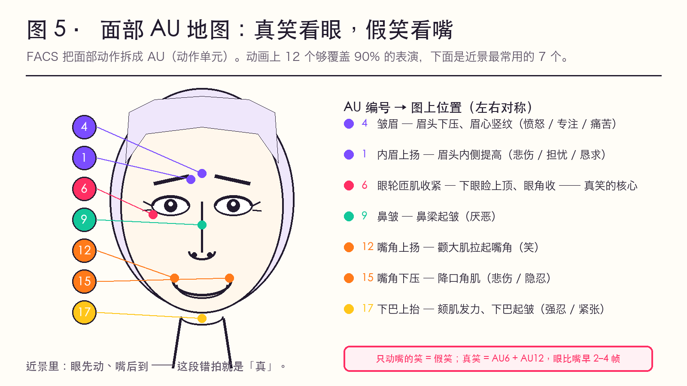
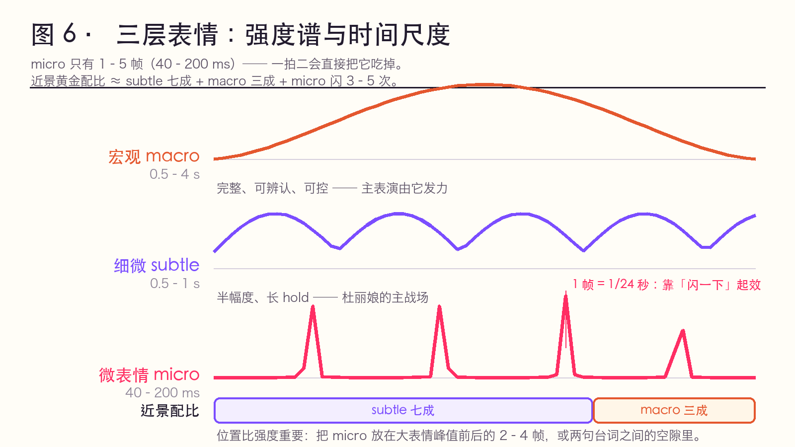

✅ 原理层（FACS 本身是心理学/面部研究的标准系统）+ ⚠️ 应用为动画转译建议。
这一页解决的是：为什么"五官画得很细"反而更假。
面部表情的"真"，主要靠两个地方：
| 部位 | 为什么关键 | 业余作品的通病 |
|---|---|---|
| 眼周（眼轮匝肌，AU6） | 真笑的证据：眼角收紧、下眼睑上顶、出现"鱼尾" | 只把嘴角提上去 → 社交假笑 |
| 鼻唇沟 / 面颊（AU12 带起的颊部） | 笑是"脸的下半部分整体移动"，不只是嘴 | 嘴单独变形 → 嘴在脸上"漂" |
行业里最有用的一条判断：只动嘴的笑是假笑（Duchenne 假笑 vs 真笑）。
真笑 = AU6 + AU12 同时 到位，而且 AU6 有 2–4 帧的"提前量"或"滞后"——眼先动、嘴后到，这一段错拍就是"真"。
FACS（Facial Action Coding System, Ekman & Friesen, 1978）把面部动作拆成几十个 AU（Action Unit）。动画上不需要全背，这 12 个够覆盖 90% 的表演：
| AU | 名称 | 做法 | 情绪/含义 |
|---|---|---|---|
| AU1 | 内眉上扬 | 眉头内侧提高 | 悲伤、担忧、恳求 |
| AU2 | 外眉上扬 | 眉尾提高 | 疑问、惊讶（轻） |
| AU4 | 眉降肌（皱眉） | 眉头下压、眉心竖纹 | 愤怒、专注、痛苦 |
| AU5 | 上眼睑上抬 | 眼睛睁大 | 惊讶、恐惧（强） |
| AU6 | 眼轮匝肌收紧 | 下眼睑上顶、眼角收 | 真笑的核心、喜悦 |
| AU7 | 眼睑收紧 | 眼变细、上下压 | 愤怒、轻蔑、怀疑 |
| AU9 | 鼻皱 | 鼻梁起皱 | 厌恶 |
| AU12 | 嘴角上扬 | 颧大肌拉起嘴角 | 笑 |
| AU15 | 嘴角下压 | 降口角肌 | 悲伤、失落、隐忍 |
| AU17 | 下巴上抬 | 颏肌发力、下巴起皱 | 强忍、紧张 |
| AU20 | 唇拉伸 | 嘴唇左右拉长 | 恐惧、尴尬 |
| AU25/26 | 张口 | 下颌下落 | 惊讶、说话 |
组合示例（可以直接当"表情配方"用）：
| 表情 | 组合 | 关键错拍 |
|---|---|---|
| 真笑 | AU12 + AU6 | 眼先 2–4 帧 |
| 假笑 / 客气 | AU12 单独 | 越标准越假（这正是你要的"客气"效果） |
| 惊讶（真） | AU1+2 + AU5 + AU26 | 眉毛先 1–2 帧，嘴最后 |
| 惊后回神 | 上述 → 迅速收回，只剩 AU2 的余韵 | 收回比爆发慢 3 倍 |
| 隐忍（杜丽娘高频） | AU4 + AU7 + AU15 + AU17 | 全部"半幅度"，不下到底 |
| 羞 | AU6 微 + AU12 单侧 + 低头 + 避开视线 | 单侧的抬嘴角，绝不能对称 |
| 悲（含泪克制） | AU1 + AU15 + AU17 + 眨眼变慢 | 眨眼变慢是"要哭"的第一信号 |
图 5 · 面部 AU 地图：真笑看眼，假笑看嘴 —— 7 个常用 AU 长在哪儿、各代表什么；「只动嘴的笑是假笑」一眼看懂。

图 6 · 三层表情的强度谱与时间尺度 —— macro / subtle / micro 三条谱线并排：micro 只有 1–5 帧，一拍二会直接把它吃掉。

| 图 | 用来讲什么 | 一句话投屏解说 |
|---|---|---|
| 图 5 | 眼周 vs 嘴角 | 「眼睛不笑，嘴角抬得再标准，也只是客气。」 |
| 图 6 | 微表情的时间尺度 | 「它只有 1 到 5 帧 —— 你画得出来，才叫近景。」 |
这是戏曲近景表演最有用的一条技术参数：
推论（直接可执行）：
杜丽娘应用：昆曲的表演是"收着的"，大表情符号（掩面、回眸）之间有大段空隙。这些空隙里如果不放微表情，近景就是"空的"——这就是"怎么努力都达不到要求"的真正位置。
| 层级 | 时长 | 特征 | 动画用法 |
|---|---|---|---|
| 宏观表情 macro | 0.5–4 s | 完整、可辨认、可控 | 主表演（程式符号在此发力） |
| 微表情 micro | 40–200 ms | 一闪而过、无意识泄露 | 1–5 帧插入（近景的"真感"来源） |
| 细微表情 subtle | 1/2–1 s | 幅度极小的持续表情 | 半幅度、长 hold（杜丽娘的主战场） |
近景的黄金配比（经验值）：subtle 七成 + macro 三成 + micro 闪三到五次。
scripts/build_static.py 从 Markdown 静态生成 · 原仓库 Ivy-Piggy/anime-key-animation